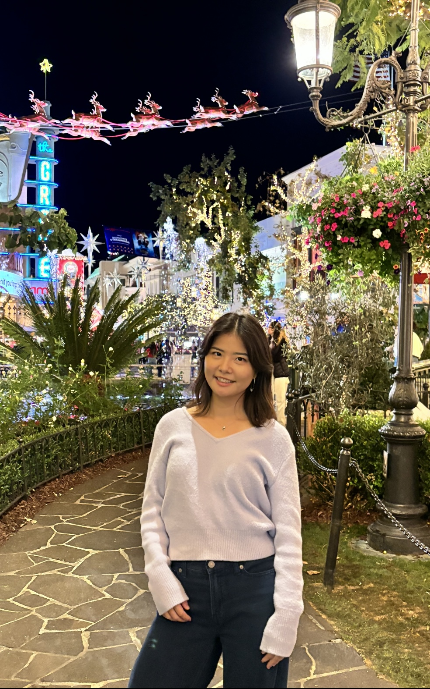

About Me

Hi! I'm Alyssa. I'm a recent graduate from the University of Southern California with a B.S. in Computer Science.
Previously, I've built web apps to automate equipment testing at Northrop Grumman, and built protein models and a database to streamline drug development at Bristol Myers Squibb.
I love building tools that deliver high-quality experiences to empower users and enrich their lives. At heart, I'm driven by intentionality, understanding, and the desire to enhance our collective human experience.
Other aspirations, hobbies, and side quests include dancing, reading (currently: Dune), and running (2024 goal: a half-marathon!).
If you find anything interesting while browsing my website or have any questions, let's get in touch!